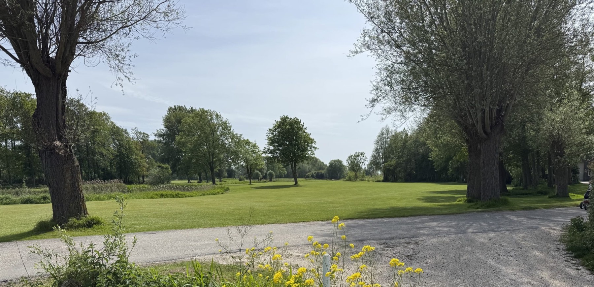
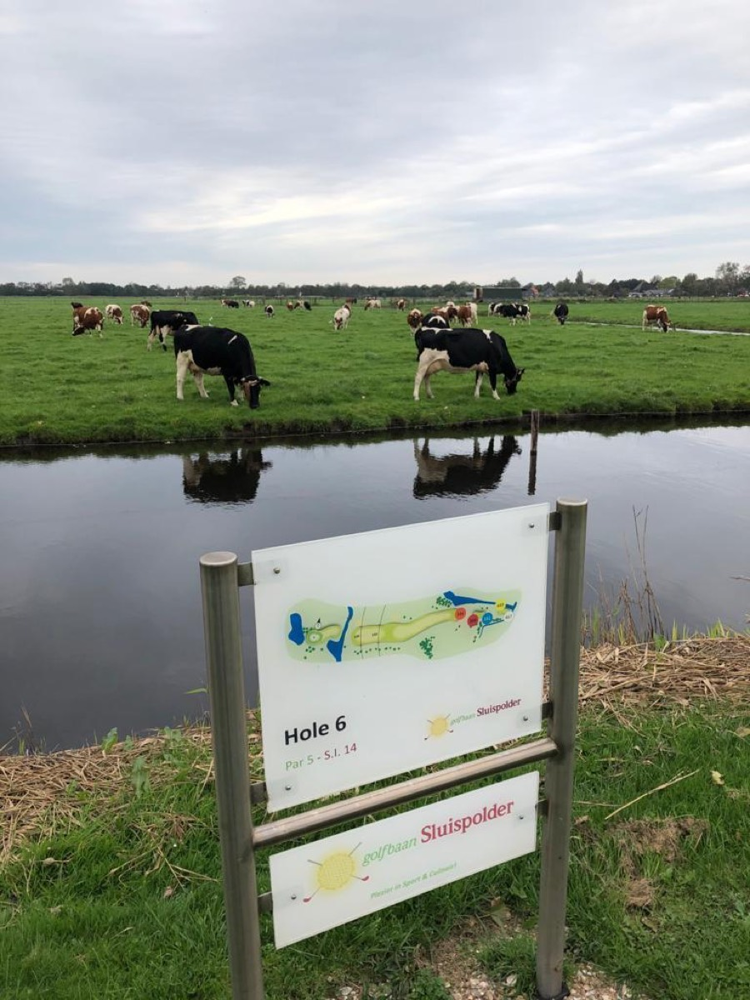
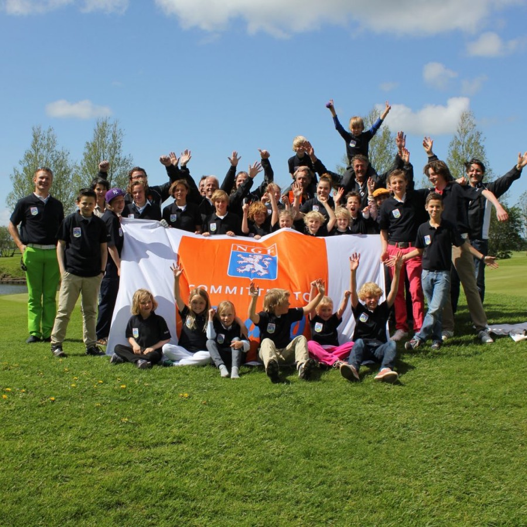

Sinds 7 december 1982
De Noordhollandse GolfClub
Lid worden van de Noordhollandse Golfclub, betekent veel plezier & golfvrienden! Er zijn verschillende lidmaatschappen om speelrecht te krijgen én zo te kunnen deelnemen aan de vele leuke clubactiviteiten.

Vaste Wekelijkse Activiteiten
Alle activiteiten en contactpersonen- MaandagSeniorenMeet 2 Golf
- DinsdagKieftenDinsdag Drivers
- WoensdagHerenmiddag
- DonderdagGeen vaste activiteit
- VrijdagNH Golffriends
- ZaterdagWeekendcompetitie
- ZondagVroege VogelsWedstrijdcommissie

De baan
Achter de duinen, tussen Bergen en Alkmaar
Achter de duinen, tussen Bergen en Alkmaar ligt de schitterende 18-holes baan Sluispolder. Een interessante baan, rijkelijk voorzien van bunkers en waterpartijen, die bij veel holes voor een extra handicap zorgen. Door de ligging van de baan, dicht bij de kust, is tevens de bijna altijd aanwezige wind een bepalende factor in het spel. Het samenspel van deze elementen zorgt ervoor dat de baan met haar ruime greens en brede fairways een uitdaging blijft voor de geoefende speler.
- 18
- holes baan Sluispolder
- 9
- holes par 3 baan
- 1982
- begonnen met de aanleg
- 17
- NGF-teams in 2026
Lid worden
Meer voordelen van een lidmaatschap
- Gratis 3-gangen diner tijdens Stay-in-Touch diners
- Greenfeekorting op 22 andere golfbanen
- Dinerbon a 50 euro
- Voorrang op lockerhuur
- Exclusieve deelname aan gezellige clubwedstrijden
- Inrange radartechnologie op de drivingrange
- Gebruik van alle oefenfaciliteiten
- 10x 50% introductiekorting voor gasten van leden >29 jaar (m.u.v. NH15)
- Deelname aan vaste wekelijkse activiteiten
- Online tee-time regelen
- Clubblad & nieuwsbrief
- Lidmaatschap van de Nederlandse Golf Federatie (NGF Registratie)
“De kracht van onze mooie golfclub is de gezelligheid & de leuke activiteiten. Dat doen wij samen, door leden en voor leden. Samen organiseren wij leuke activiteiten en helpen mee om er steeds weer iets leuks van te maken.”
Samen organiseren wij leuke activiteiten en helpen mee om er steeds weer iets leuks van te maken.
Jeugd
“Wie de jeugd heeft, heeft de toekomst”
De jeugdcommissie behartigt de belangen van de jeugdleden van de Noordhollandse Golfclub. Tevens organiseert zij activiteiten voor de jeugdleden en stimuleert overige jeugdigen voor de golfsport. Vanaf 5 jaar ben je van harte welkom als lid of om een keer te komen kijken en mee te doen. In het jeugdplan leest u alles over de mogelijkheden, de professionals, de commissieleden en de activiteiten voor de jeugd.

Laatste Nieuws
Van de club
MIGNON SANDERS NEDERLANDS KAMPIOEN Matchplay 50+
Wat zijn we trots: Wij hebben namelijk een ware kampioen in ons midden bij de Noordhollandse Golfclub! Mignon werd recent al derde in de Nationale Strokeplay kampioenschappen 50+ die de NGF organiseert. Het weekend van 27-28 juli deed ze daar nog een schepje bovenop en werd Nederlands Kampioen Matchplay 50+.
Lees verderInvité Open 2026
Foto's van de wedstrijddag en de prijsuitreiking in het clubhuis.
Bekijk de foto'sLid worden
Veel plezier & golfvrienden
Heb je een vraag over een lidmaatschap, neem dan contact op via secretariaat@denoordhollandsegolfclub.nl.